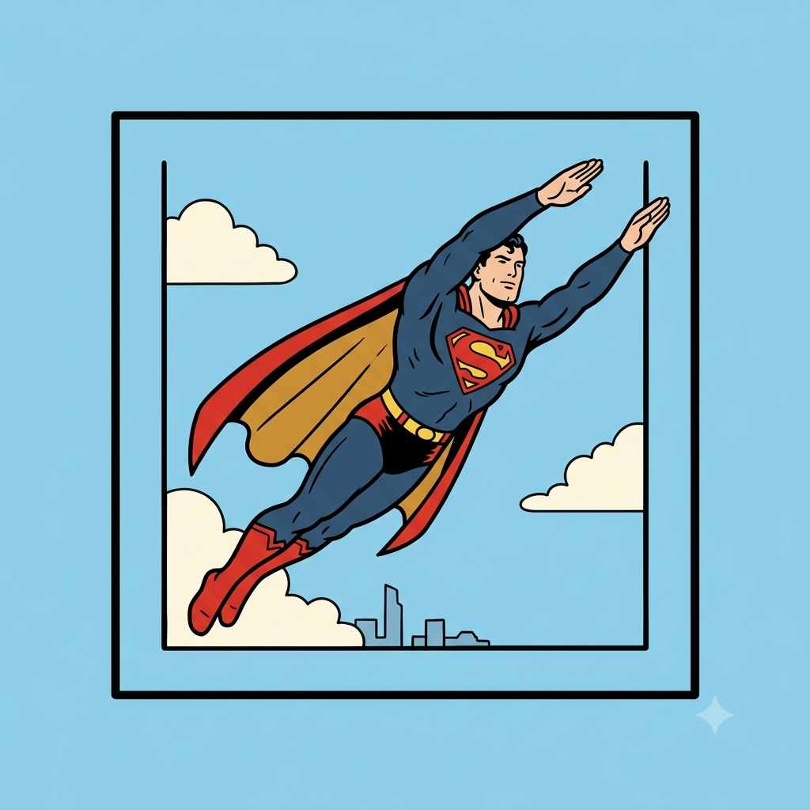

Quem foi o primeiro super-herói?
Por: Márjory Dal'Lin
Boas-vindas ao meu blog! Você sabia que o Superman, criado em 1938 por Jerry Siegel e Joe Shuster, é amplamente considerado o primeiro super-herói no formato moderno de quadrinhos? Sua estreia deu início à Era de Ouro dos Quadrinhos.
Fonte: DC Comics / Guia dos Quadrinhos